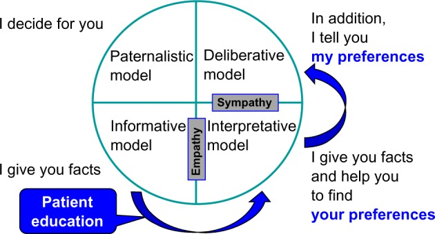

Patient-Physician relationship
General principles
- Doctors owe special duties of care to their patients;
- All interactions involving doctors and patients should be characterised by honesty, politeness and respect on both sides;
- Effective communication requires both parties to listen, talk frankly and recognize uncertainties;
- Doctors have the main duty to make the relationship work but patients also have responsibilities;
- Establishing and maintaining appropriate boundaries is essential.
The therapeutic relationship and duties to the patient
Discussion of the ‘doctor–patient partnership’ has the therapeutic model in mind, whether it takes place in a primary care or hospital setting. The doctor has a commitment to the patient although other professionals may manage specific episodes of care. What distinguishes this from other models of care is that the doctor focuses on the best interests of the patient, even though the patient’s wishes may have to be overridden in exceptional cases if they conflict seriously with other duties of the doctor, such as the need to use evidence-based therapies, manage hospital resources carefully or avoid putting other people’s health at risk.
Models
Background to changed expectations
The physician-patient relationship has long been regarded as asymmetric. The physician was supposed to have knowledge about the patient’s condition, whereas the patient was seen as someone who lacked insight in his own situation. The physician was considered to be rational, the patient emotional. In the last decades the situation changed fundamentally. Patient autonomy and right to take decision is now emphasized. Physicians are less inclined to think they know what is best for the patient.
Thomas Percival’s 1803 influential text on medical ethics set the benchmark for the traits of a good doctor which, he said, should be a balance of compassion and authority. He advised that doctors should be sensitive to patients’ fears and anxieties by shielding them from disturbing information. Generations of doctors were taught to keep up patients’ hopes and spirits by withholding bad news which would depress them. The duty of beneficence was interpreted as an obligation to be reassuring rather than honest. From the 1950s, this interpretation became discredited and, by the 1980s, paternalism was seen as completely outmoded. All current ethical guidance sees patients themselves as the most suitable arbiters of their own best interests. This entails them being given all the relevant information about their condition.
Changing expectations of the doctors’ role led some to be concerned that they would be seen as mere technicians rather than real partners in relationships with patients. Terms such as ‘cafeteria medicine’ describe situations in which doctors are perceived as simply offering patients a menu of choices in a mechanistic approach to patient autonomy. Although there must be a presumption that patients are informed about decisions in relation to their treatment, the fear of being seen as paternalistic or disrespectful of patient autonomy should no mean that doctors automatically apply the same checklist in all cases.

Paternalism
The concept of paternalism originated in the 1880s, with its fundamental idea being the “principle and practice of paternal administration, government by a father.” Drawing an analogy with a father, paternalism assumes two aspects of the paternal role: the father acting benevolently in line with his understanding of his children’s interests and making decisions about their well-being instead of letting them decide. In healthcare relationships, this analogy extends further, asserting that professionals, with their superior training and knowledge, hold an authoritative position to determine the patient’s best interests. Hence, the central principle in this model is beneficence.
Paternalism always entails some form of interference or refusal to comply with an individual’s preferences regarding their well-being. Paternalistic actions often involve force, coercion, deception, lying, manipulation of information, or withholding information. Various forms of paternalism exist:
- Strong paternalism implies that the patient is competent to give consent, but the doctor does not afford them the opportunity, withholding sufficient information.
- Weak paternalism indicates that the patient is unable to comprehend the provided information due to factors like youth, mental illness, or incapacity.
Contemporary ethics generally rejects strong paternalism, except in rare instances like mandatory treatment for certain infectious diseases with quarantine measures or obligatory tests in specific professions. Antipaternalists argue that strong paternalistic intervention cannot be justified as it violates individual rights and excessively restricts free choice. On the other hand, weak paternalism finds justification in emergency situations or when the patient cannot make decisions due to pain, stress, unconsciousness, or shock. It is deemed acceptable for young children, very old patients, and mentally ill patients, especially in emergency situations where there’s no time for surrogate decision-making. In these cases, the prevention of harm or the provision of benefits usually outweighs the loss of independence, given the person’s limited ability to make autonomous choices.
There are also distinctions between active and passive paternalism.
- Active paternalism occurs when a patient prefers non-intervention
- Passive paternalism involves a professional’s refusal to carry out a patient’s positive preferences for paternalistic reasons.
Passive paternalism is generally more justifiable than active paternalism, as physicians are not morally obligated to satisfy a patient’s desires if they conflict with accepted medical standards or the physician’s conscience.
Informative model
The model is sometimes referred to as the scientific engineering or consumer model. In this approach, the goal of the interaction between the physician and patient is for the physician to furnish the patient with all pertinent information. The patient, in turn, selects the medical interventions they desire, which is carried out the by the doctor. In this context, the physician educates the patient about their disease state, potential diagnostic and therapeutic options, the risks and benefits associated with these interventions, and any uncertainties in knowledge.
The informative model presupposes a distinct separation between facts and values. The patient’s values are assumed to be well-defined and known; what the patient lacks is factual information. The physician’s duty is to provide all available facts, with the patient’s values determining the course of treatment. There is no room for the physician’s values, or judgment. In the informative model, the physician functions as a conveyor of technical expertise, offering the patient the means to exert control. The concept of patient autonomy in this model revolves around the patient’s control over medical decision-making.
In its most extremes form of this model, physicians are viewed as the services or commodities they provide—essentially, mere products. Consequently, the doctor-patient relationship in this model is highly asymmetrical, differing significantly from the partnership model and, in some aspects, can be seen as the complete opposite of the paternalist model. Analee and Thomas Beisecker succinctly encapsulate the consumer metaphor in the doctor-patient relationship with the following points: “Consumerism focuses on rights; consumerism assumes the doctor is self-centered; consumerism replaces trust with accountability; consumerism presumes that the patient’s health care values dominate; consumerism may require third-party supervision.” The underlying assumption of the consumer model is that the interests of the physician and the patient diverge, and the sole person genuinely concerned about the patient’s health is the patient. Crucially, in this context, the specific distribution of power lies in the hands of the patient: “In a consumerist relationship, the seller has no particular authority; power rests in the buyer who can make the decisions to buy or not to buy as he or she sees fit.”
Interpretive model
This model closely follows the informative model but provides a greater role for the doctor to assist the patient in understanding her values and interests, and the possible impact of different interventions in these terms. The doctor acts as an advisor to help the patient “elucidate and make coherent” their values but does not pass judgement on these values or attempt to prioritize them on behalf of the patient. The ultimate choice of intervention still rests with the patient in the interpretive model, but the doctor plays a more active role in shaping this choice. Similar to the informative physician, the interpretive physician imparts information about the nature of the condition and the potential risks and benefits of interventions. However, the interpretive physician goes beyond this by helping the patient articulate and comprehend their values, aiding in determining which medical interventions best reflect those values.
In the interpretive model, the patient’s values are not necessarily fixed and may not be fully understood by the patient. They might be unclear, in flux, or conflicting in specific situations. In extreme cases, the physician may view the patient’s life as a narrative whole, specifying the patient’s values and their priority, and then identifying tests and treatments that align with these values. Importantly, the physician does not dictate to the patient.
Deliberative model
In the deliberative model, the goal of the physician-patient interaction is to assist the patient in determining and selecting the most appropriate health-related values that can be actualized in the clinical context. The physician accomplishes this by providing information about the patient’s clinical situation and helping to clarify the types of values inherent in the available options. The physician’s objectives extend to suggesting why certain health-related values are more commendable and should be pursued.
This model closely follows the interpretive model but gives the doctor a greater role in judging and prioritizing patient values.** It is the doctor’s role to “elucidate the types of values embodied in the available options, suggesting why certain health-related values are more worthy and should be aspired to.”. The aim of the deliberation is moral persuasion, but not coercion, with the patient ultimately deciding on the appropriate validity and priority of these values in their life. Whereas the doctor is an advisor or counsellor in the interpretive model, in the deliberative model they serve as “a teacher or friend, engaging the patient in dialogue on what course of action would be best.” The doctor indicates both what the patient could do and, in the context of their understanding of the patient’s life and values, what he thinks the patient should do in terms of choice of intervention. The final decision still remains with the patient but is subject to greater persuasion and normative argumentation on the part of the doctor. This model conceives of patient autonomy as a tool for moral self-development; “the patient is empowered not simply to follow unexamined preferences or examined values, but to consider, through dialogue, alternative health-related values, their worthiness, and their implications for treatment.”
Truth telling by doctors
It is never easy to deliver or receive bad news, particularly when no cure is available and there is little that the patient or health team can do to alter the situation. The doctor’s role is to ensure that decision making is returned as much as possible to the patient, rather than pre-empting the choice. Although in the past, doctors often fudged the issue because they feared that the truth might result in lost hopes, sadness, suffering and grief, patients now expect honest answers and support for the anxieties that may flow from them. They should be supported in dealing with the additional anxiety sometimes created by greater knowledge. They have their own goals and need as accurate information as possible about what is achievable. The clinical limitations need to be discussed but doctors also need to be open about any other factors that are likely to affect treatment decisions or their timing.
Breaking Bad News
What Is Bad News?
One defines bad news as “any news that drastically and negatively alters the patient’s view of her or his future”. Bad news is stereotypically associated with a terminal diagnosis, but family physicians encounter many situations that involve imparting bad news; for example, a pregnant woman’s ultrasound verifies a fetal demise, a middle-aged woman’s magnetic resonance imaging scan confirms the clinical suspicion of multiple sclerosis, or an adolescent’s polydipsia and weight loss prove to be the onset of diabetes.
Why Is Breaking Bad News So Difficult?
There are many reasons why physicians have difficulty breaking bad news. A common concern is how the news will affect the patient, and this is often used to justify withholding bad news. Hippocrates advised “concealing most things from the patient while you are attending to him. Give necessary orders with cheerfulness and serenity…revealing nothing of the patient’s future or present condition. For many patients…have taken a turn for the worse…by forecast of what is to come.”
How Should Bad News Be Delivered?
Rabow and McPhee ABCDE model
- A Advance preparation
- Familiarize yourself with the relevant clinical information. Ideally, have the patient’s chart or pertinent laboratory data on hand during the conversation.
- Be prepared to provide at least basic information about prognosis and treatment options.
- Arrange for adequate time in a private, comfortable location. Instruct office or hospital staff that there should be no interruptions. Turn your pager to silent mode or leave it with a colleague.
- Mentally rehearse how you will deliver the news. You may wish to practice out loud, as you would prepare for public speaking. Script specific words and phrases to use or avoid.
- If you have limited experience delivering bad news, consider observing a more experienced colleague or role play a variety of scenarios with colleagues before actually being faced with the situation. Prepare emotionally.
- B Build a therapeutic environment/relationship
- Determine the patient’s preferences for what and how much they want to know.
- When possible, have family members or other supportive persons present. This should be at the patient’s discretion. If bad news is anticipated, ask in advance who they would like present and how they would like the others to be involved.
- Introduce yourself to everyone present and ask for names and relationships to the patient. Foreshadow the bad news, “I’m sorry, but I have bad news.”
- Use touch where appropriate. Some patients or family members will prefer not to be touched. Be sensitive to cultural differences and personal preference.
- Avoid inappropriate humor or flippant comments; depending on your relationship with the patient, some discreet humor may be appropriate. Assure the patient you will be available.
- Schedule follow-up meetings and make appropriate arrangements with your office. Advise appropriate staff and colleagues of the situation.
- C Communicate well
- Ask what the patient or family already knows and understands. One source advises, “Before you tell, ask…. Find out the patient’s expectations before you give the information.” Speak frankly but compassionately.
- Avoid euphemisms and medical jargon. Use the words cancer or death.
- Allow silence and tears, and avoid the urge to talk to overcome your own discomfort. Proceed at the patient’s pace. Have the patient tell you his or her understanding of what you have said. Encourage questions.
- At subsequent visits, ask the patient if he or she understands, and use repetition and corrections as needed. Be aware that the patient will not retain much of what is said after the initial bad news.
- Write things down, use sketches or diagrams, and repeat key information. At the conclusion of each visit, summarize and make follow-up plans.
- D Deal with the patient and family reactions
- Assess and respond to emotional reactions.
- Be aware of cognitive coping strategies (e.g., denial, blame, intellectualization, disbelief, acceptance).
- Be attuned to body language.
- With subsequent visits, monitor the patient’s emotional status, assessing for despondency or suicidal ideations.
- Be empathetic; it is appropriate to say “I’m sorry” or “I don’t know.” Crying may be appropriate, but be reflective—are your tears from empathy with your patient or are they a reflection of your own personal issues?
- Do not argue with or criticize colleagues; avoid defensiveness regarding your, or a colleague’s, medical care.
- E Encourage and validate emotions
- Offer realistic hope. Even if a cure is not realistic, offer hope and encouragement about what options are available. Discuss treatment options at the outset, and arrange follow-up meetings for decision making.
- Explore what the news means to the patient. Inquire about the patient’s emotional and spiritual needs and what support systems they have in place.
- Offer referrals as needed. Use interdisciplinary services to enhance patient care (e.g., hospice), but avoid using these as a means of disengaging from the relationship.
- Attend to your own needs during and following the delivery of bad news. Issues of counter-transference may arise, triggering poorly understood but powerful feelings. A formal or informal debriefing session with involved house staff, office or hospital personnel may be appropriate to review the medical management and their feelings.
The SPIKES Protocol
The acronym SPIKES, stands for Setting up, Perception, Invitation, Knowledge, Emotions with Empathy, and Strategy or Summary. This approach was designed by Walter Baile and colleagues at the University of Texas MD Anderson Cancer Center in Houston TX, and is designed to help healthcare professionals to accomplish the following while breaking bad news:
- Setting Up
The first step of the SPIKES protocol is setting up the interview. Setting the stage for optimal communication by preparing what to say prior to the conversation is essential to successful communication. In this steps setting the room environment where the discussion will take place also is important.
- Perception
The patient’s perception of the news to be shared will determine how the news is conveyed to the patient. Empathic communication skills will help the doctor explore the patient and family’s perception of illness or events to date in a disease trajectory. The patient’s response to the doctor’s questioning will help guide the manner and detail by which the details will be conveyed. Additionally, the physician can interpret if the patient is engaging in any variation of illness denial such as wishful thinking, omission of the essential but unfavorable medical details of the illness, or unrealistic expectations of treatment.
- Invitation
The permission to have information shared is granted by the patient or family. Once an inquiry has been made as to the extent of understanding and the context in which the information fits, the doctor can then ask for permission to share the current news. Using what the patient has shared about their understanding of the illness and the context in which testing has been done, the doctor then asks permission to share the current information.
- Knowledge
To “Fire a Warning Shot” and warn the patient and family that the incoming news is not good. Beginning a discussion with phrases such as: “Unfortunately I have some bad news to tell you,” or “I am sorry to tell you,” or “Things are not going in the direction we had hoped” allows the patient and family to emotionally brace themselves for the information to follow. These statements of warning also establish the doctor as a patient advocate.
The sharing of bad news must be presented based on the assessed level of patient’s understanding, compliance, and wishes for disclosure. Instead of using technical language, showing patients concrete examples of trends in lab work or radiology can make an abstract concept clearer. The actual sharing of the bad news should be done slowly so that the patient and family understand. Choosing words carefully is particularly important if the news indicates a very poor prognosis. In situations involving cancer, patients report that the most important component of the process of breaking bad news is the content itself, specifically the expertise and the specific detail that is provided during the conversation. This demands that the doctor be well prepared for the informational needs of the patient and family.
- Empathy
Patients will have a wide range of emotional reactions as they respond to the bad news delivered to them. The emotional response may range from silence to dramatic crying and sobbing. This creates a potentially awkward situation for the doctor, but this sense of awkwardness can be diminished through engaging in empathetic communication. Although the entire conversation and time spent interacting with the patient involves empathetic communication, an appropriate and kind response to the emotion demonstrated when the patient hears bad news is critically important. The doctor should show an understanding of the patient’s emotion and demonstrate empathy and respect in the face of a difficult situation.
- Strategizing for the future
The last step in the SPIKES Protocol, will be to establish that patients have a clear plan for the future. Preparatory information is important in order to decrease distress, regardless of illness stage. One of the best ways to prepare a patient for participation in treatment decisions is to ensure that he or she understands the information that has been provided. Before discussing a treatment plan, it is important to ask your patient if they are ready for such a discussion. Frequent clarification during the discussion of the treatment plan will help the doctor establish the patient’s understanding and likelihood of following through with the plan.
Gifts from patients
Small gifts from patients of nominal or modest value are acceptable on the part of the physician. This is provided that there is no expectation of a different form of therapy or a higher level of care based on the gift. You can accept a cake at Christmas, a balloon on your birthday, or other tokens of esteem, but not if the patient expects an extra, or different prescription for something, in exchange for the gift. The rules on gifts from patients are far less rigorous, precise, or clear than the rules on gifts from the pharmaceutical industry. There is an automatic presumption that gifts from industry always carry an influence toward a product, service, or prescribing practice. Gifts from industry are viewed differently because there can be no other intention behind them except to buy influence and alter behavior. There is no such automatic presumption on the part of gifts received from patients.
Sexual relationships with patients
Sexual contact between a physician and a patient is always inappropriate. It is unclear if there can ever be a completely acceptable, ethical way to alter the physician/patient relationship so that sexual contact is acceptable. At the very least, the physician and patient must mutually agree to end the formal professional relationship of a doctor and a patient. It is not clear how much time must elapse between the ending of the professional doctor/ patient relationship and the beginning of a personal relationship. The recommendation for psychiatrists is somewhat unique. The American Psychiatric Association guidelines specifically state that there can never be a sexual or personally intimate private relationship between doctor and patient even after the professional relationship has ended. In other words, a psychiatrist should not have sexual contact even with former patients. These guidelines apply no matter who initiates the relationship. In other words, it is not more acceptable for a doctor and patient to have sexual relations if the patient initiates the sexual relationship rather than the physician. These guidelines also take no account of gender or sexual orientation. It is always ethically unacceptable to have a sexual relationship between a psychiatrist and either a current or a former patient. It is ethically unacceptable for a physician of any kind to have a sexual relationship with a current patient.
Clinical cases
Case 1
You are a resident in the emergency department. An irate parent comes to you furious because the social worker has been asking him about striking his child. The child is a 5-year-old boy who has been in the emergency department four times this year with several episodes of trauma that did not seem related. Today, the child is brought in with a child complaint of slipping into a hot bathtub with a bum wound on his legs. The parent threatens to sue you and says How dare you think that about me? I love my son!
Case 2
You are working at the desk in your hospital when another employee of the hospital asks for information about a patient who was admitted last night with a pulmonary embolus secondary to cancer. You know the details of the case. The person requesting the information states that he is a close friend and co-worker of your patient. He shows you proper identification proving he really is a co-worker of your patient who also works in the hospital.
Case 3
You are a psychiatrist in session with a patient who tells you he thinks his boss at work is persecuting him. The patient has had mild schizophrenia. The patient asks you if you can keep a secret and then tells you that he is planning to kill his boss “when the time is right.” You say, “Of course, everything you tell me during the session will always be confidential”
Case 4
A 38-year-old bus driver is seen in clinic for fever, cough, and sputum with an apical infiltrate as well as sputum positive for acid-fast bacilli. The patient is unwilling to take tuberculosis (TB) medications consistently and his sputum remains positive for TB. Directly observed therapy while in his home has failed. You continue to cajole, discuss, encourage, threaten, educate, advise, and beg him to take the medications but he refuses.
Case 5
42-yars-old man with leukemia repeatedly refuses chemotherapy. He loses consciousness and his mother begs you to give the chemotherapy. What should you tell her?
Case 6
A surgeon is consulted to place a central line. He is very rude and arrogant and speaks harshly to the patient. The patient signs consent after being informed of the complications and alternatives in management. A pneumothorax occurs and the patient is infuriated that this “high-handed bastard” hurt him. He files suit against the surgeon for malpractice. What will be the most likely out- come of the suit?
Case 7
A patient with diabetes has osteomyelitis on an X ray of his foot. The physician does not perform a bone biopsy and gives the patient oral cefadroxyl for six weeks. After therapy is over, the osteomyelitis has completely resolved. The patient sees some literature on the Internet several months later conclusively showing that a bone biopsy is an indispensable part of osteomyelitis care to determine an organism and its sensitivities. In addition, he sees that intravenous therapy is the standard of care. He files suit against the physician. What will be the most likely outcome?
Case 8
A patient with diabetes lives in a small town with only one endocrinologist. The endocrinologist has a full practice and is not accepting new patients. The patient has very bad diabetes and has a very complex regimen that her family practitioner insists is beyond the scope of his understanding. The patient shows up in the office and insists to the office manager that she be accepted. What should be done?
Case 9
James is an young doctor, 3 months into his job. He has just finished a 12-hour on-call night shift when he decides to go to his local supermarket to pick up some groceries on his way home. Whilst there, he hears someone shout for help. He rushes over to find a body lying on the floor. It appears that the person has fainted and hit their head on the floor, causing a significant head wound. James introduces himself as a doctor and applies pressure to the site of bleeding to stem blood flow, having checked that the patient was breathing. He asks for an ambulance to be called. James continues to monitor the patient’s breathing whilst applying pressure to the head wound. After a short while, an ambulance arrives and the paramedics take over. The supermarket manager takes down James’ details and asks for a description of what happened. The next day, James arrives at work and recounts the story to a colleague. His colleague expressed his concern at James’ actions, saying that he could get sued. Several days later, two letters arrive for James in the post. He becomes slightly anxious after hearing what his colleague had said about legal action. He opens the letters; one is from the supermarket manager and the other is from the patient. They both expressed their gratitude for his actions.
Questions
- What is a Good Samaritan act?
- Is there a legal duty to perform a Good Samaritan act?
- What standard of care would the doctor be held to in a court of law?
- Is there an ethical and professional duty to act as a Good Samaritan?
Case 10
It is Friday night and you have almost finished admitting your patient. You are just waiting for his blood test results. The locum doctor taking over your shift is running late, and you are getting a bit stressed as you have a train to catch back to London so that you can make it home in time for your cousin’s birthday party. Just as you are about to leave your bleep goes off. A nurse informs you that one of your patients, Eric, is having some chest pain. He was admitted 2 days ago with pneumonia and you suspect that the pain is related to the infection. You ask the nurse to do a set of observations and an electrocardiogram (ECG) and say you will ask the doctor taking over to assess him. You then receive an incoming call. It is your cousin, who is very drunk and urging you to hurry up as you are missing out on all the fun. You tell her you are on your way. The locum arrives 20 minutes later and you rush off straight away. Later that night you remember that you completely forgot to hand over the patient who was having chest pain. You decide to ring the hospital and find that he is now a patient on the coronary care unit, having had a massive heart attack.
Questions
- Who has a duty of care to this patient?
- Did you, as the young doctor who received the call, have a duty of care to a patient you have not seen since the onset of new symptoms?
- Should hospitals have systems in place to ensure that ill patients are handed over to night staff?
Case 11
Ben is a 48-year-old man with terminal metastatic melanoma. Originally diagnosed 3 years ago, the cancer has spread despite all treatments, including surgical resection, chemotherapy and radiotherapy. He is angry at having terminal cancer and has been verbally abusive to numerous staff members, face to face, on the telephone and via email, and including senior consultants, junior doctors, specialist cancer nurses and ward nurses. Ben has made several formal complaints against the hospital, in addition to his local District Nursing service and community palliative care team. He has, however, maintained strong and friendly relationships with a few oncology team members and his own GP. Ben has had his care transferred from another hospital and between oncologists at his current hospital due to recurrent breakdowns in relationships with his doctors and nurses due to his behaviour. Ben attends the emergency department at 2 a.m. with uncontrolled pain. The emergency department doctors have referred him to oncology as he is a cancer patient and have refused to see him. You are the junior oncology doctor working overnight in the hospital. After politely introducing yourself and appropriately commenting on the difficulties you are aware he is facing from his disease, Ben tells you aggressively to stop being condescending, swears at you and makes a derogatory comment about your physical appearance. He demands to see a senior oncology team member who he says knows his case and he has a good relationship with. You are the only oncology doctor available to see the patient for the next 7 hours when the shift changes.
Questions
- Does a doctor’s duty extend to treating patients who are aggressive and verbally abusive?
- Does it make a difference if the behaviour is as a result of the patient reacting badly to their condition or illness?
- What if there is no one else able to take over care?
Case 12
Nora, a frail 82 year old lady with advanced lung cancer, is brought to A&E late at night by ambulance. Her husband, her main carer, was admitted yesterday with pneumonia. He mentioned to staff that his wife was at home alone and was concerned she might not be managing without him. After she failed to answer the staff’s phone calls, an ambulance was dispatched, and she was found in her chair, dehydrated and unable to mobilise. Since her husband’s admission she had been too weak and breathless to get up, and had been unable to get herself anything to eat or drink. Fortunately her test results are normal and the A&E doctor suggests she stays overnight so a carer can be arranged the following morning. The doctor explains to Nora they are concerned that if she goes home she may become dehydrated or have a fall. Nora is adamant she wants to go home, stating that she is fine, would rather sleep in her own bed, and will take a sandwich from A&E for supper. She starts getting up and making her way towards the door. She has no history of mental health problems.
Questions
- How should doctors approach patients who make decisions they consider unwise?
- What issues arise from the complex interplay between health and social care, particularly during out of hours?
Case 13
An 18-month-old girl, Lilly, presents to A&E with vomiting. She is well known to the paediatric department for vomiting and poor feeding. She was born at 29 weeks’ gestation and was very ill as a neonate. She spent the next 4 months in hospital with various infections and difficulty tolerating feeds. Since coming home, her mother struggled to feed Lilly and ensure she put on weight. Her mother coped as well as she could but had to give up her job as an office manager, as she felt no one else could spend the time Lilly needed to feed. Lilly’s mother also has to look after her 3-year-old son, who is healthy. Lilly has no defined diagnosis and this makes managing her condition difficult. Her mother has consulted a number of different hospitals in a desperate attempt to help her daughter. Each hospital performed the same tests and came to the same conclusion – that Lilly was malnourished but no firm diagnosis could be made. At presentation, Lilly looks thin and small. Her mother says Lilly has not been able to keep anything down for days because she has been coughing. You think she looks a little dehydrated but otherwise not too bad. Her chest is clear. You ask for a chest X-ray to rule out a chest infection. The radiologist later alerts you to the multiple rib fractures of differing ages. He also tells you the bones look osteopenic, consistent with chronic metabolic bone disease. You discuss the case with your consultant, who is not convinced of any child abuse. He asks you to focus on making the child better and ready for discharge.
Questions
- What are your legal obligations in this case?
- How would you proceed?
- Do you have any ethical obligations to Lilly’s mother?
Case 14
Since you graduated from medical school you have been bombarded with people asking you about their possible medical problems. When you went home for a weekend to escape from the hospital, your brother-in-law asks you to give him some advice on his hayfever. You felt able to do this so you made some suggestions. Your aunt then asked you about her arthritis and whether you could prescribe her some extra pain relief. Later that day your grandparents come to visit. Your grandma confides in you that she is worried about the number of times your grandpa is getting up to go to the toilet in the night. She wants some reassurance that this is normal.
Questions
- What should a doctor do when a friend or relative asks for medical advice?
- Can a doctor write a prescription for a friend?